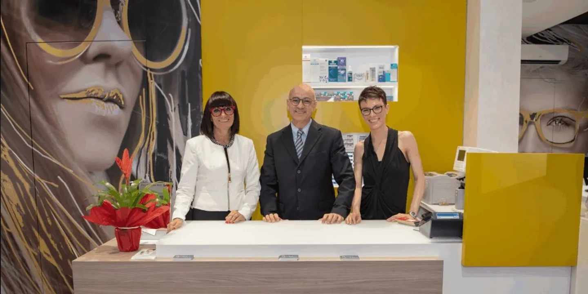
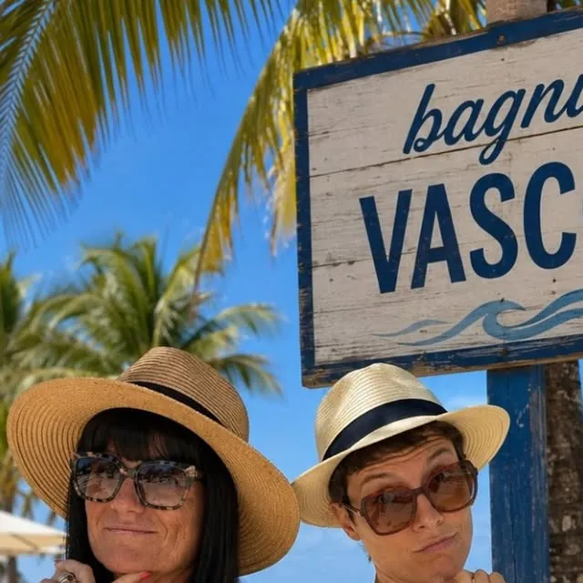

Lenti a contatto su misura
Applicazione di lenti a contatto personalizzate e medicali, oltre alle giornaliere, quindicinali, mensili, trimestrali e annuali.
Controllo della vista gratuito, lenti a contatto su misura, lenti progressive e montature da vista e da sole scelte con voi. Convenzionati ASL e Previmedical.
4,8 su 82 recensioni Google, sede di via Fréjus.
Lo facciamo su appuntamento, con strumenti per il controllo optometrico, nella sede più comoda per voi. Chiamate e fissiamo l'orario.
Applicazione di lenti a contatto personalizzate e medicali, oltre alle giornaliere, quindicinali, mensili, trimestrali e annuali.
Controllo della progressione della miopia con lenti oftalmiche e lenti a contatto.
Lenti multifocali di ultima generazione, lenti ultrasottili e fotocromatiche.
Montature griffate dei marchi più amati, da vista e da sole, da provare con calma in negozio.
Consulenza per chi ha una vista molto ridotta.
Vi seguiamo prima e dopo l'acquisto, anche per sistemare occhiali a cui tenete.
Convenzionati ASL e Previmedical.

Ottica Vasco è di Sabrina Vasco, ottica con trent'anni di esperienza. In negozio vi seguiamo dal controllo della vista alla scelta di montature e lenti, fino all'assistenza dopo l'acquisto.
Il negozio è gestito da due professioniste straordinarie: simpatiche, premurose e incredibilmente gentili.
È la seconda volta che mi faccio fare gli occhiali nuovi con lenti multifocali e fotocromatiche e sono sempre perfette.
Oggi la proprietaria ha compiuto un miracolo salvando i miei occhiali da sole a cui sono affezionata.
Gli ottici di fiducia per tutta la nostra famiglia. Grazie Sabrina e Claudia.

Novità, montature nuove e qualche video per sorridere. Una cliente ci ha scoperti proprio così.
@ottica.vasco10139 Torino
011 385 6109
10126 Torino
011 677127